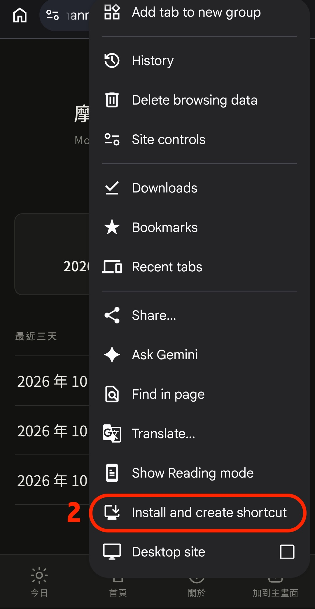
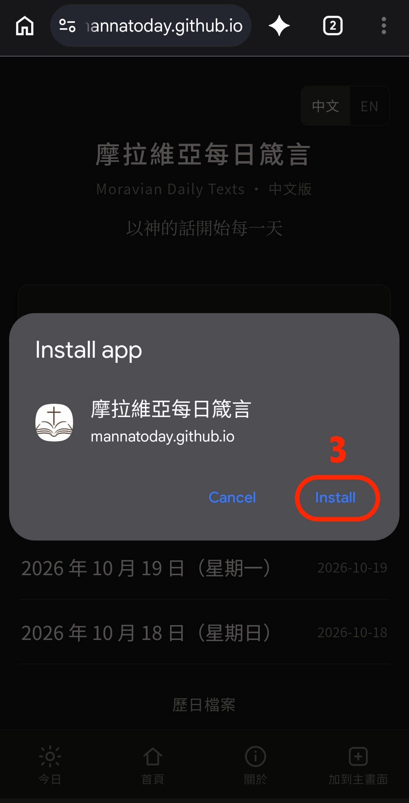
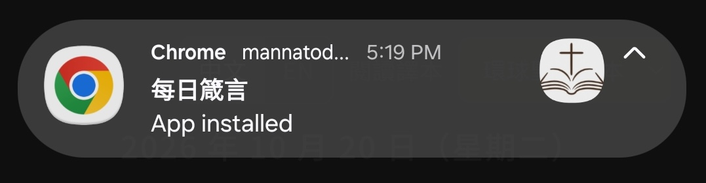
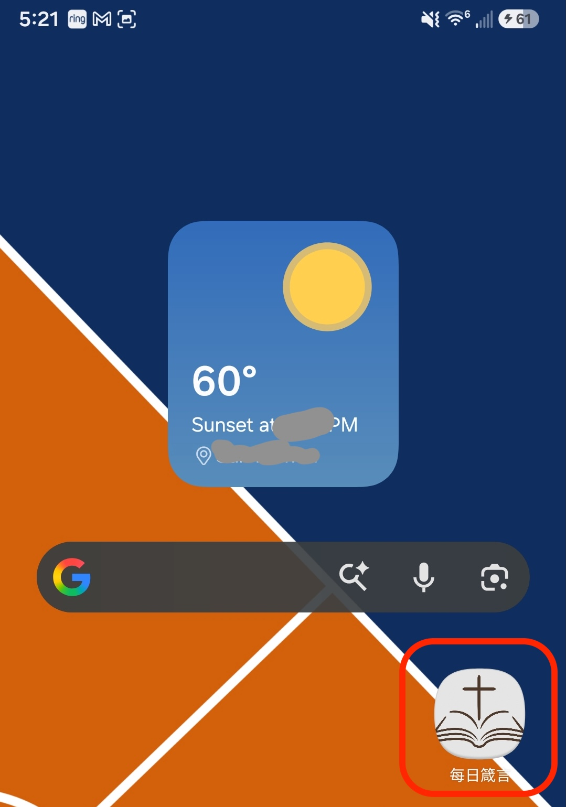

如何把這個網站變成手機 App？
為了方便每天家庭靈修時快速打開，建議你將它設定到手機桌面上。
你已經從主頁的圖示打開。
這個瀏覽器可以直接安裝，按下面的按鈕即可。
蘋果手機（iPhone / Safari）
用 Safari 瀏覽器打開這個網址。
點擊畫面下方的「分享」圖示（一個正方形帶有向上箭頭）。
往下滑動，選擇「加入主畫面」（Add to Home Screen）。
命名為「摩拉維亞每日箴言」，點擊右上角「新增」即可。
安卓手機（Android / Chrome）
-
用 Chrome 瀏覽器打開這個網址。
-
點擊右上角的「三個點」功能選單。

-
選擇「安裝應用程式」或「加入主畫面」。


-
確認後，手機桌面就會出現一個像 App 一樣的快捷圖示。
